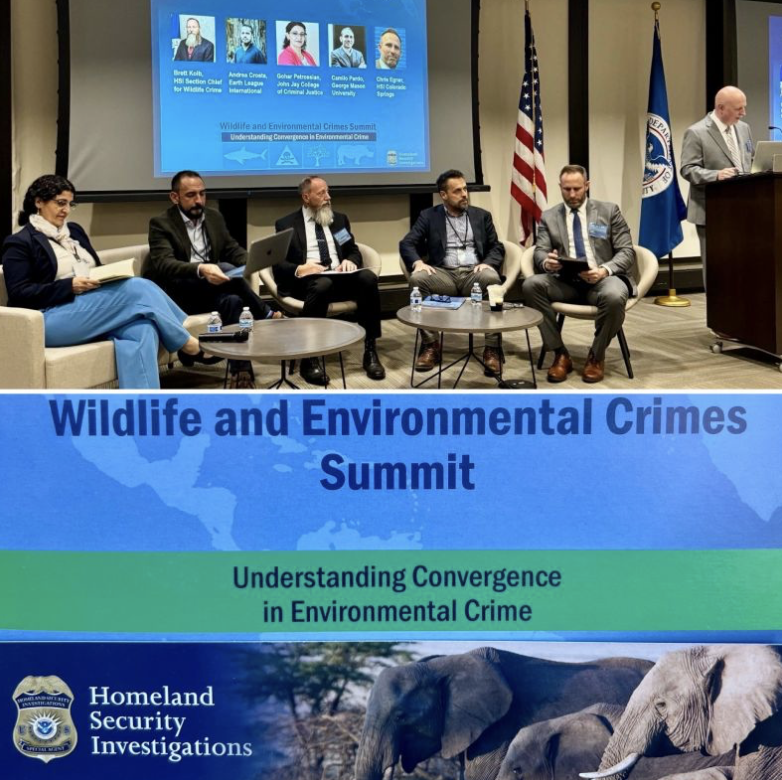
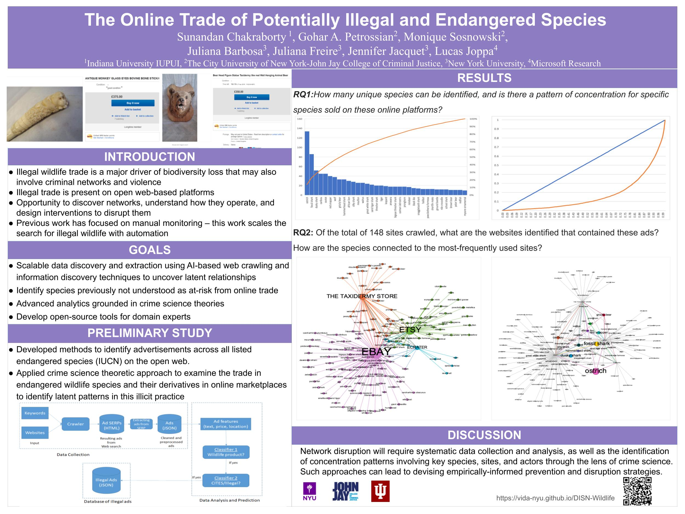

News & Events

March 2026
Featured in Forbes
Forbes highlighted how AI is tracking illegal wildlife trade hidden in online marketplaces, featuring the project's research and approach.

June 2025
Featured in Mongabay
Mongabay featured the study on endangered shark trophies dominating the online wildlife trade.

April 2025
Tandon Research Excellence Expo (HILTS)
Juliana Barbosa, Eduarda Ramos, Gohar Petrossian, and Juliana Freire presented their research at the prestigious Tandon Research Excellence Expo.

February 3-4, 2025
FBI New York Transnational Organized Crime Conference
Gohar Petrossian presented groundbreaking research on transnational wildlife crime at the FBI conference.

September 4-5, 2024
Wildlife and Environmental Crime Summit
Gohar Petrossian served as a distinguished panelist at the Wildlife and Environmental Crime Summit.

2024
American Society of Criminology Conference
Ulhas Gondhali presented a comprehensive poster at the American Society of Criminology conference.

2023
NSF DISN Conference 2023
Gohar Petrossian and Sunandan Chakraborty presented at the prestigious NSF DISN Conference.

2023
InfoWild Workshop at HIS Conference 2023
Juliana Barbosa presented innovative research at the CIKM International Workshop on Wildlife Conservation.